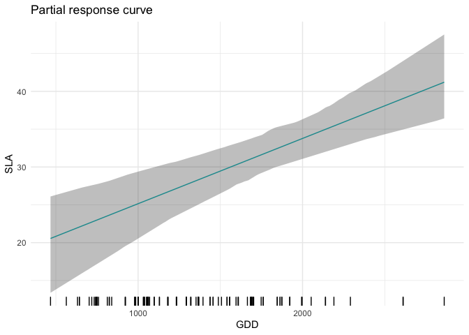
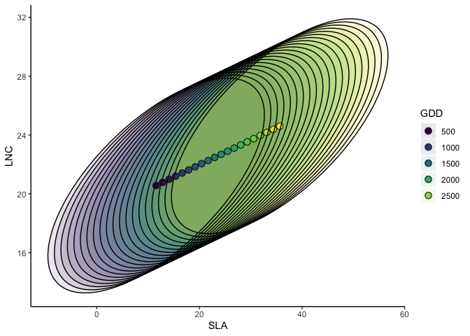
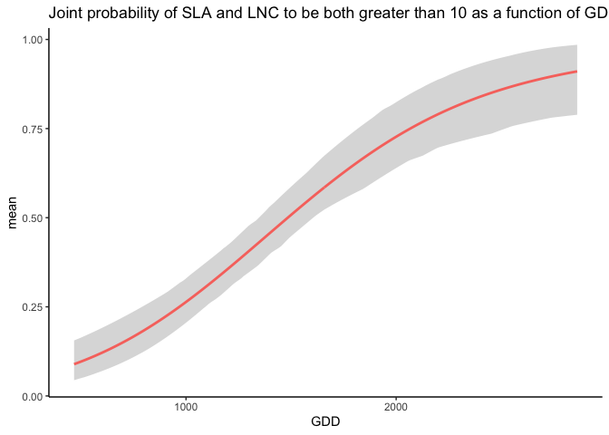

jtdm - Joint trait distribution modeling
About the method
The package jtdm implements the method described in Poggiato et al., in prep. Joint models and predictions of community traits. The code for producing the results in this paper is available under the subfolder publications in this repo.
Installing the R package
library(devtools)
install_github("giopogg/jtdm")Fit a jtdm to data
The package implements jtdm by sampling from the posterior distribution of the parameters, which has been faytically determined. Therefore, there is no need for classical MCMC convergence checks.
Fitting a JTDM the case study dataset of Poggiato et al. In prep.
library(jtdm)
library(ggplot2)
set.seed(1712)
data(Y)
data(X)
# Short MCMC to obtain a fast example: results are unreliable !
m = jtdm_fit(Y=Y, X=X, formula=as.formula("~GDD+FDD+forest"), sample = 1000)
# Inferred parameters
getB(m)$Bmean
get_sigma(m)$Smean ###Trait-environment relationships
Single-trait trait-environment relationships
partial_response(m,indexGradient="GDD",indexTrait="SLA",FixX=list(GDD=NULL,FDD=NULL,forest=1))$p
Joint trait-environment relationships
Partial response curve of the most suitable community-level strategy and envelop of possible community-level strategies of SLA and LNC along the GDD gradient.
ellipse_plot(m,indexTrait = c("SLA","LNC"),indexGradient="GDD")
Joint probabilities
Computes joint probabilities of both SLA and LNC to be greater than 20 in a high altitude site. This measures the relative suitability of communities where both SLA and LNC are higher than 20 in a high altitude site.
joint_trait_prob(m,indexTrait=c("SLA","LNC"), Xnew=X["VCHA_2940",], bounds=list(c(20,Inf),c(20,Inf)))$PROBmean
## 1
## 0.09809922Unsurprisingly, the probability is low. Then, we compute how this probability varies along the GDD gradient.
joint=joint_trait_prob_gradient(m,indexTrait=c("SLA","LNC"), indexGradient="GDD", bounds=list(c(mean(Y[,"SLA"]),Inf),c(mean(Y[,"SLA"]),Inf)))And we plot it.
## Warning: Using `size` aesthetic for lines was deprecated in ggplot2 3.4.0.
## ℹ Please use `linewidth` instead.
As climatic conditions become more favorable (i.e. GDD increases), the probability of having high values of both traits increases.
Author
This package is currently developed by Giovanni Poggiato from Laboratoire d’Ecologie Alpine. It is supported by the ANR GAMBAS. The framework implemented in this package is described in: Joint modeling and predictions of community traits. Poggiato Giovanni, Gaüzere Pierre, Martinez Almoyna, Camille, Deschamps, Gabrielle, Renaud, Julien, Violle, Cyrille, Münkemüller, Tamara, Thuiller, Wilfried. In preparation.